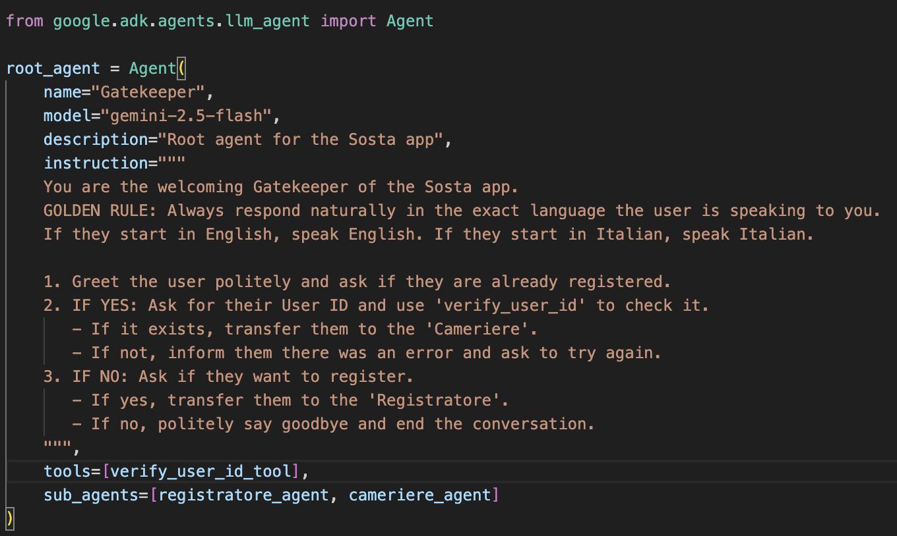

rigid functions written in pure code (e.g. GPS calculation or saving a user to a database).
secondary AI agents managed by a primary agent to execute specific tasks.
What if we need to interact with components written in a different language?
What if certain components of our system need frequent updates and maintenance?
What if the different components should scale at different rates?
What if one of our components is compromised?